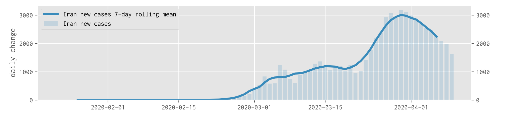
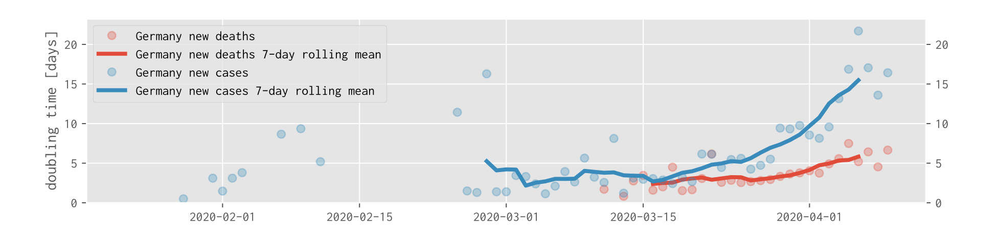
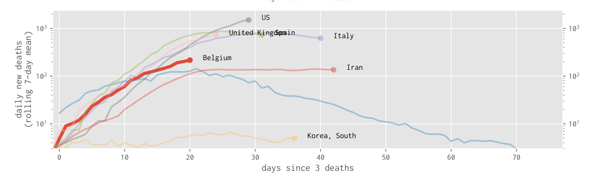

Welcome to the Open Science COVID19 Analysis page! Read about our motivation, data sources, team. Use our analysis plots of COVID19 cases and deaths to better understand the development of the pandemic and measures taken. Or use our code and extend the analysis for your own purposes, or to share here.
For each country in the world, we provide a standard set of analysis plots for which are explained here.
For Germany (492 Landkreise) we show data for all 492 Landkreise.
Some more interactive elements are in preparation.

If you want to contribute, please get in touch.
Disclaimer
The plots and code here has been put together by volunteers who have no training in epidemiology. There are likely to be errors in the processing. You are welcome to use the material at your own risk. The license is available.

Acknowledgements
- Johns Hopkins University provides data for countries
- Robert Koch Institute provides data for within Germany
- Open source and scientific computing community for the data tools
- Github for hosting repository and html files
- Project Jupyter for the Notebook and Binder service
- The H2020 project Photon and Neutron Open Science Cloud (PaNOSC)
